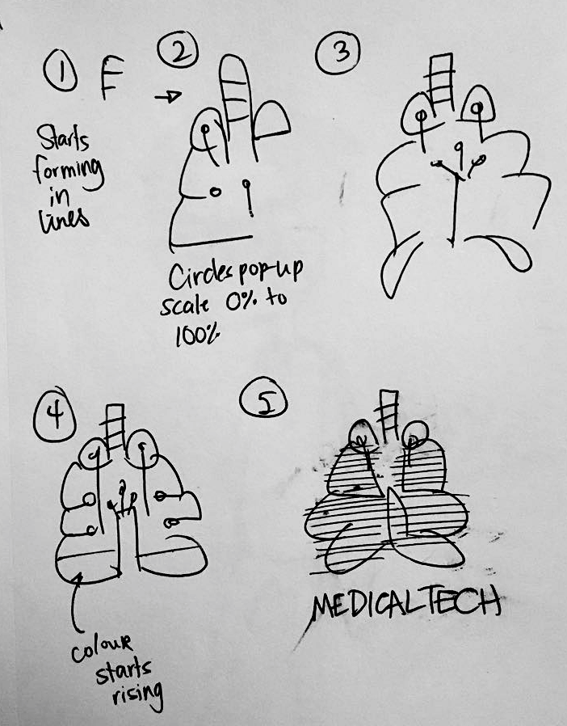

Contact me
Click here to send me an email.
Every business with a logo can immensely benefit from an animated version. This showcases that I can make a quick but extremely effective 5-second animation that pinpoints exactly what the brand consists of.
Sketches were made, and then style frames were created to show how the animation would look like at the end. A bit more experimenting was made during the production of the composition.
Click here to send me an email.